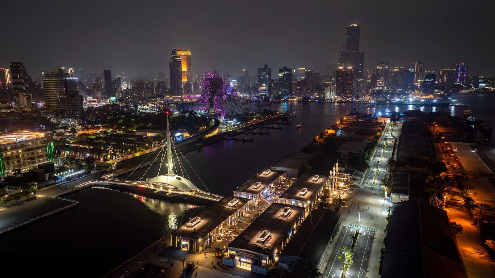

舊倉庫的華麗轉身，碰撞港都海風的前衛藝術浪潮

駁二藝術特區位於高雄市鹽埕區，緊鄰高雄港第三船渠。「駁二」原本是接駁碼頭的第二號倉庫，曾隨著傳統產業轉型而荒廢。直到 2001 年，在一群熱血藝術家與文化工作者的推動下，將這片閒置的港口倉庫群打造成充滿實驗性與前衛感的藝術文創園區。整個園區分為大勇倉庫群、大義倉庫群與蓬萊倉庫群，常年舉辦各式設計展、音樂祭與當代藝術展，是高雄最具代表性的文化地標與市民休憩聖地。
走在駁二的街頭，隨處可見令人驚豔的巨型塗鴉與雕塑。包括最經典的「工人漁婦」大型公仔、屋頂上的「大黃蜂」變形金剛，以及舊鐵道延伸出的廣闊草原。這些原本用來存放糖、鹽與魚貨的斑駁老倉庫，如今內部都化身為極具質感的獨立設計小店與藝廊。
緊鄰大義倉庫群的「大港橋」，是全台首座水平旋轉景觀橋，每天下午固定演出的旋轉開合秀吸引無數遊客。站在橋上，可以遠眺宛如蜂巢般前衛的「高雄流行音樂中心」主體建築，感受現代高雄港灣的國際級科幻視野。
位於蓬萊倉庫群，展示了台灣鐵道的百年歷史縮影，並擁有精緻的亞洲最大高鐵與台鐵動態鐵道模型展。園區內更有復古的「哈瑪星駁二線小火車」可供大人小孩搭乘。看著高科技的綠色高雄輕軌列車從身側緩緩滑過老舊鐵道，時空交錯感十足。